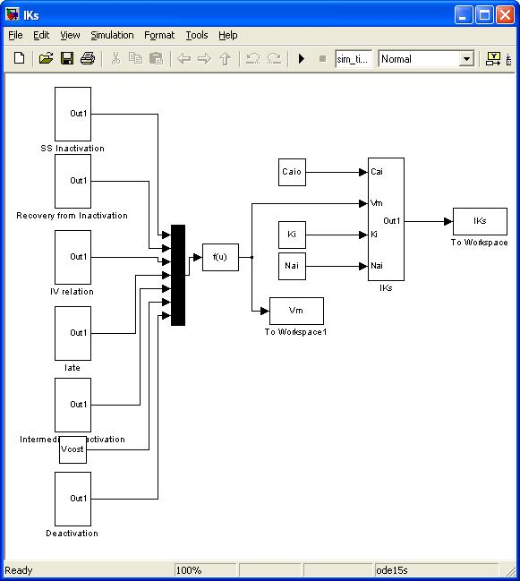
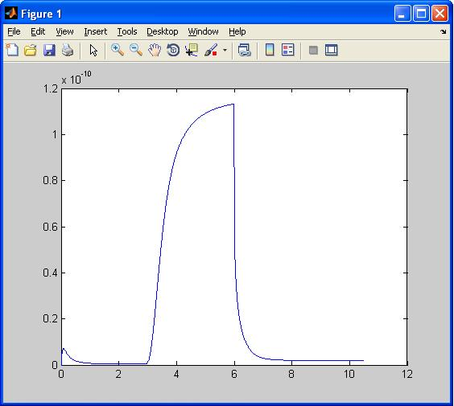

This is the readme for the model associated with the paper Severi S, Corsi C, Rocchetti M, Zaza A (2009) Mechanisms of beta-adrenergic modulation of I(Ks) in the guinea-pig ventricle: insights from experimental and model-based analysis. Biophys J 96:3862-72 This simulink code is provided in an as-is state by Stefano Severi. Parameters are set to reproduce the current response to a single voltage step in control conditions. Usage: Start matlab and type parametersIKs Iks on the command line to load initial conditions and the simulink model:  Select Simulation->Run in simulink, and then create a figure to see the result: plot(t,IKs) 